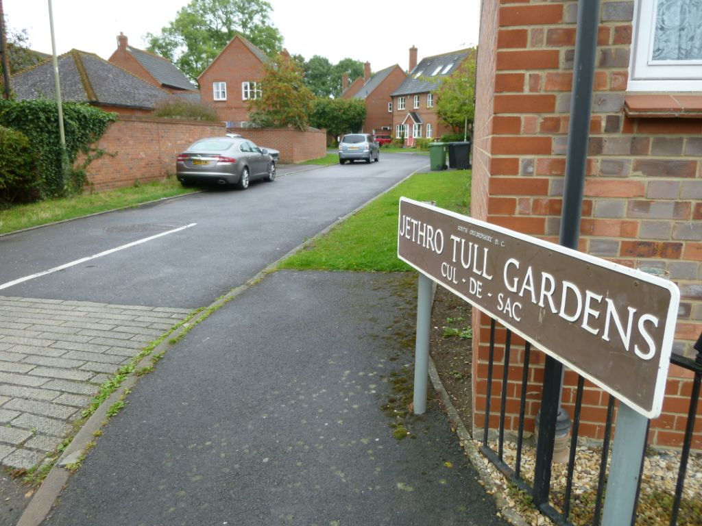
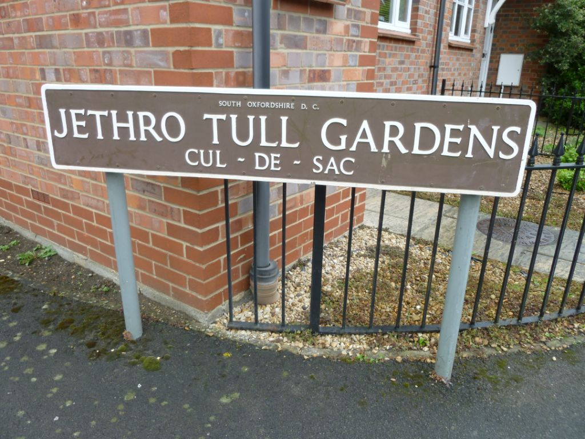

Saturday, June the 16th, 2012
back to: title, date or indexes
Further to yesterday's musing on Jethro Tull, a reader has sent me these snaps from Crowmarsh Gifford in Oxfordshire. Clearly I shall have to up sticks and move to this paradise on earth immediately.

